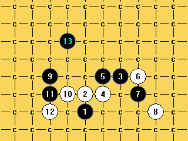

疏星败8求解
首页
五子棋交流
#1 疏星败8求解 作者：可可的棋 发表时间：2013-4-6 13:12:24
别人告诉我这个8败了，还差这个14，求思路。
#2 Re:疏星败8求解 作者：山城刀客 发表时间：2013-4-6 14:18:46

试试这个13吧！早有结论的。
#3 Re:疏星败8求解 作者：可可的棋 发表时间：2013-4-6 20:02:05
谢谢刀客，尝试一下，貌似难度很大。
#4 Re:疏星败8求解 作者：一次一个号 发表时间：2013-4-6 23:43:07
扫了一下 。。给你吧 哦我没法附件。。。不难的
#5 Re:疏星败8求解 作者：可可的棋 发表时间：2013-4-7 12:19:01
谢谢楼上，麻烦发俺邮箱吧，wzxskwzx@qq.com，我再传下，
#6 Re:可可的棋【==Re:疏星败8求解==】 作者：一次一个号 发表时间：2013-4-8 0:40:36
已发送~
#7 Re:可可的棋【==疏星败8求解==】 作者：可可的棋 发表时间：2013-4-9 7:05:41
 疏星败8.zip
疏星败8.zip
谢谢一次一个号的分享，代他上传上来。